2.3 Univariate Visualizations
2.3.1 Categorical variables
Both Nominal and Ordinal data types can be visualized using the same methods: tables, barcharts and pie charts.
2.3.1.1 Tables
Tables are the most common way to get summary statistics of a categorical variable. The table() function produces a frequency table, where each entry represents the number of records in the data set holding the corresponding labeled value.
table(dsmall$cut)
##
## Fair Good Very Good Premium Ideal
## 34 99 220 257 390There are 27 Fair quality diamonds, 83 good quality and 387 Ideal quality diamonds in this sample.
2.3.1.2 Barcharts / Barplots
A Barchart or barplot takes these frequencies, and draws bars along the X-axis where the height of the bars is determined by the frequencies seen in the table.
base
To create a barplot/barchart in base graphics requires the data to be in summarized in a table form first. Then the result of the table is plotted. The first argument is the table to be plotted, the main argument controls the title.
dc <- table(dsmall$cut)
barplot(dc, main="Barchart using base graphics")
ggplot
The geometry needed to draw a barchart in ggplot is geom_bar().
ggplot(dsmall, aes(x=cut)) + geom_bar()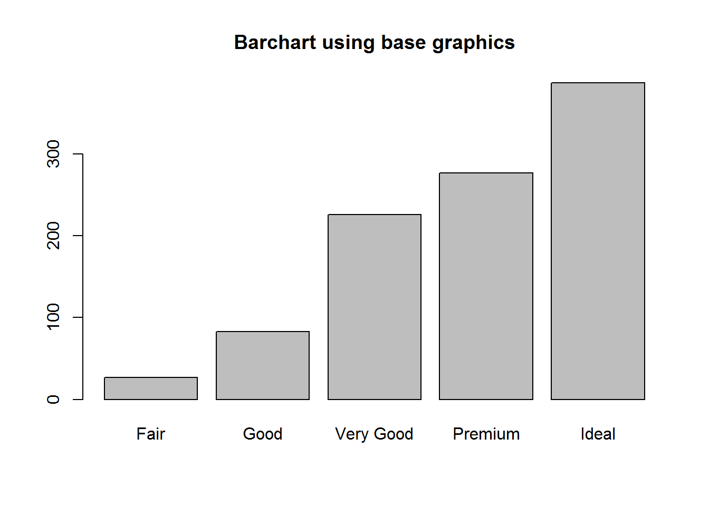
pretty The biggest addition to a barchart is the numbers on top of the bars. This isn’t mandatory, but it does make it nice.
ggplot(dsmall, aes(x=cut)) + theme_bw() +
geom_bar(aes(y = ..count..)) + ggtitle("Frequnency of diamonds by cut type") +
geom_text(aes(y=..count.. + 10, label=..count..), stat='count', size = 5)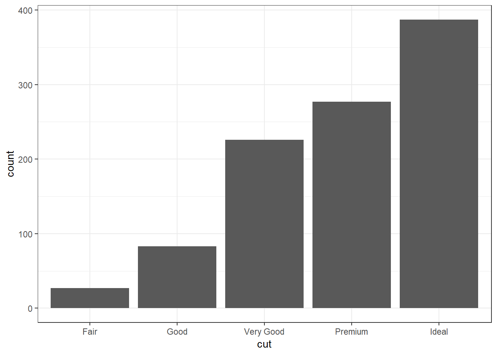
2.3.1.3 Plotting Proportions
Often you don’t want to compare counts but percents. To accomplish this, we have to aggregate the data to calculate the proportions first, then plot the aggregated data using geom_col to create the columns.
cut.props <- data.frame(prop.table(table(dsmall$cut)))
cut.props # what does this data look like?
## Var1 Freq
## 1 Fair 0.034
## 2 Good 0.099
## 3 Very Good 0.220
## 4 Premium 0.257
## 5 Ideal 0.390
ggplot(cut.props, aes(x=Var1, y=Freq)) + geom_col() +
ylab("Proportion") + xlab("Cut type") +
ggtitle("Proportion of diamonds by cut type")2.3.1.4 Cleveland Dot Plots
Another way to visualize categorical data that takes up less ink than bars is a Cleveland dot plot. Here again we are plotting summary data instead of the raw data. This uses the geom_segment that draws the lines from x=0 to the value of the proportion (named Freq because of the way data.frame works).
ggplot(cut.props, aes(x=Freq, y=Var1)) +
geom_point(size = 3) + xlab("Proportion of diamonds") +
theme_bw() + ylab("Cut Type") +
geom_segment(aes(x=0, xend=Freq, y=Var1, yend=Var1), color='grey50')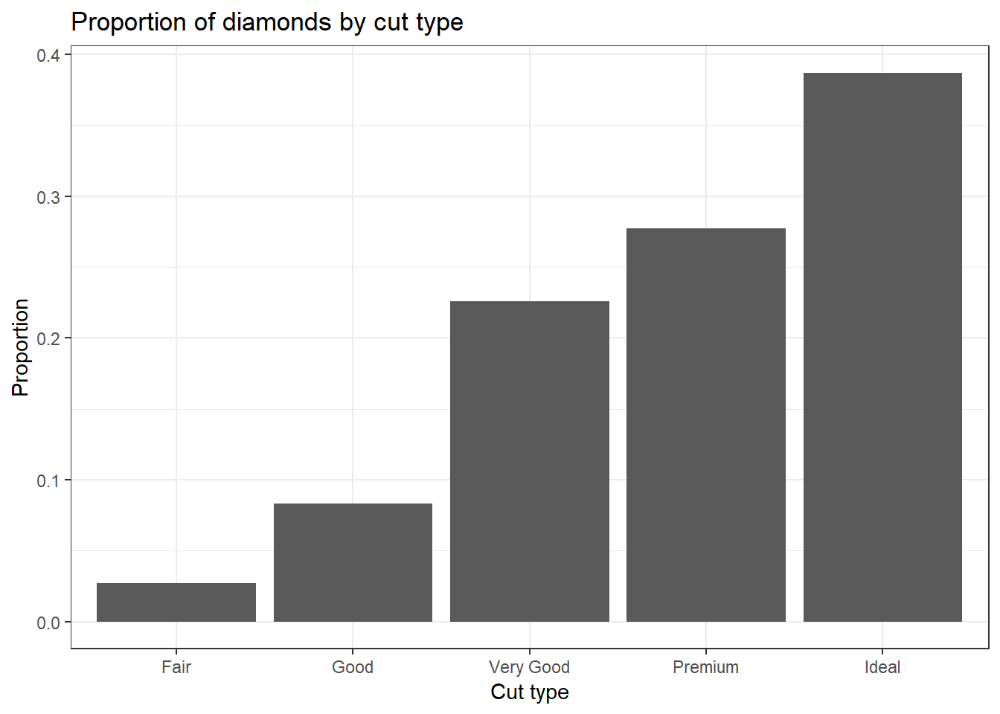
2.3.1.5 Pie Chart
Just like barplot(), pie() takes a table object as it’s argument.
base
dc <- table(dsmall$cut)
pie(dc)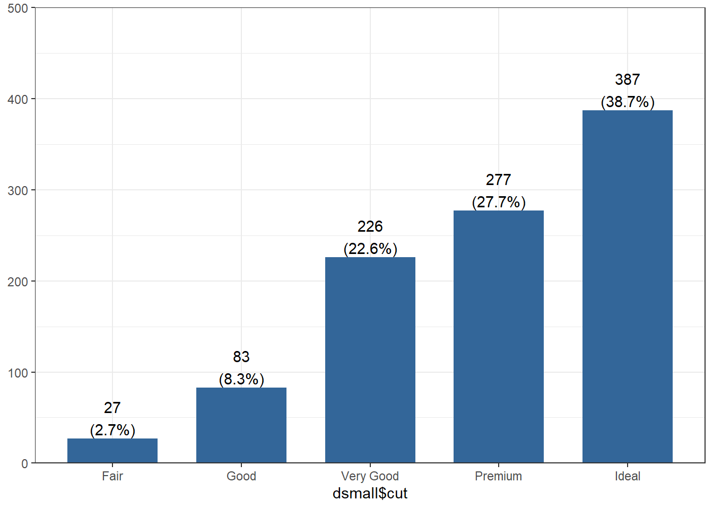
Pie charts are my least favorite plotting type. Human eyeballs can’t distinguish between angles as well as we can with heights. A mandatory piece needed to make the wedges readable is to add the percentages of each wedge.
pie(dc, labels = paste0(names(dc), ' (', prop.table(dc)*100, "%)"))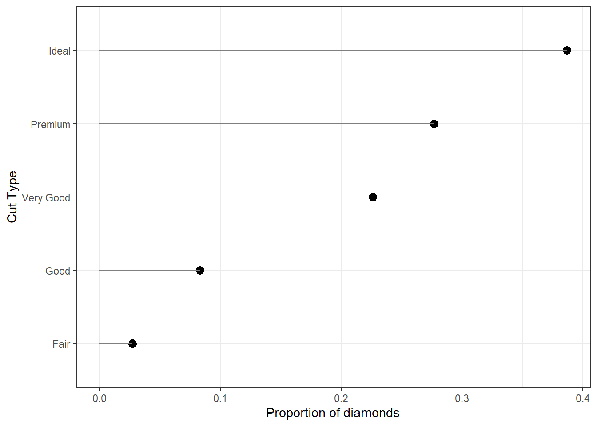
ggplot
And here I thought pie charts couldn’t get worse… i’m not a fan at all of the ggplot version. So i’m not even going to show it. Here’s a link to another great tutorial that does show you how to make one.
However – Never say never. Here’s an example of a good use of pie charts. http://www.storytellingwithdata.com/blog/2019/8/8/forty-five-pie-charts-never-say-never
2.3.1.6 Waffle Chart
This type of chart is not natively found in the ggplot2 package, but it’s own waffle package. These are great for infographics.
Reference: https://www.r-bloggers.com/making-waffle-charts-in-r-with-the-new-waffle-package/
library(waffle)
waffle(dc/10, rows=5, size=0.5,
title="Cut quality of diamond",
xlab="1 square == 10 diamonds")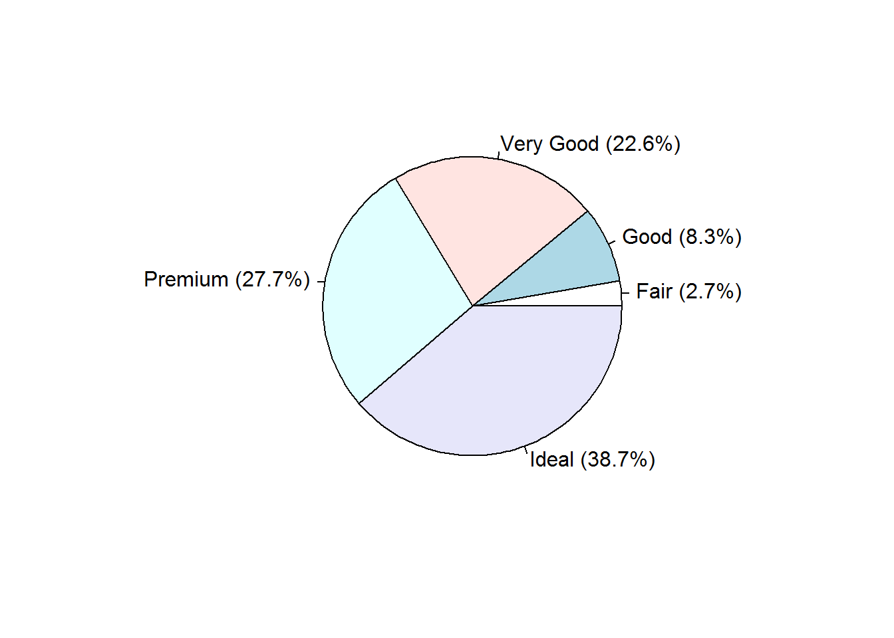
2.3.2 Continuous Measures
Here we can look at the price, carat, and depth of the diamonds.
2.3.2.1 Dotplot
plot(dsmall$depth)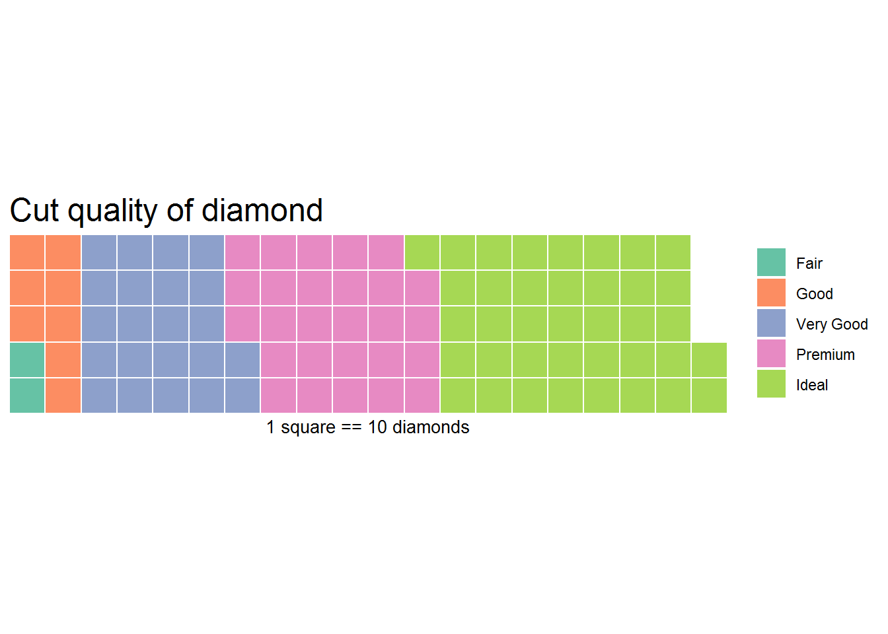
The base function plot() creates a dotplot for a continuous variable. The value of the variable is plotted on the y axis, and the index, or row number, is plotted on the x axis. This gives you a nice, quick way to see the values of the data.
Often you are not interested in the individual values of each data point, but the distribution of the data. In other words, where is the majority of the data? Does it look symmetric around some central point? Around what values do the bulk of the data lie?
2.3.2.2 Histograms
Rather than showing the value of each observation, we prefer to think of the value as belonging to a . The height of the bars in a histogram display the frequency of values that fall into those of those bins. For example if we cut the poverty rates into 7 bins of equal width, the frequency table would look like this:
table(cut(dsmall$depth, 7))
##
## (55.3,57.6] (57.6,59.8] (59.8,62.1] (62.1,64.4] (64.4,66.7] (66.7,68.9]
## 6 79 536 351 23 3
## (68.9,71.2]
## 2In a histogram, the binned counts are plotted as bars into a histogram. Note that the x-axis is continuous, so the bars touch. This is unlike the barchart that has a categorical x-axis, and vertical bars that are separated.
base You can make a histogram in base graphics super easy.
hist(dsmall$depth)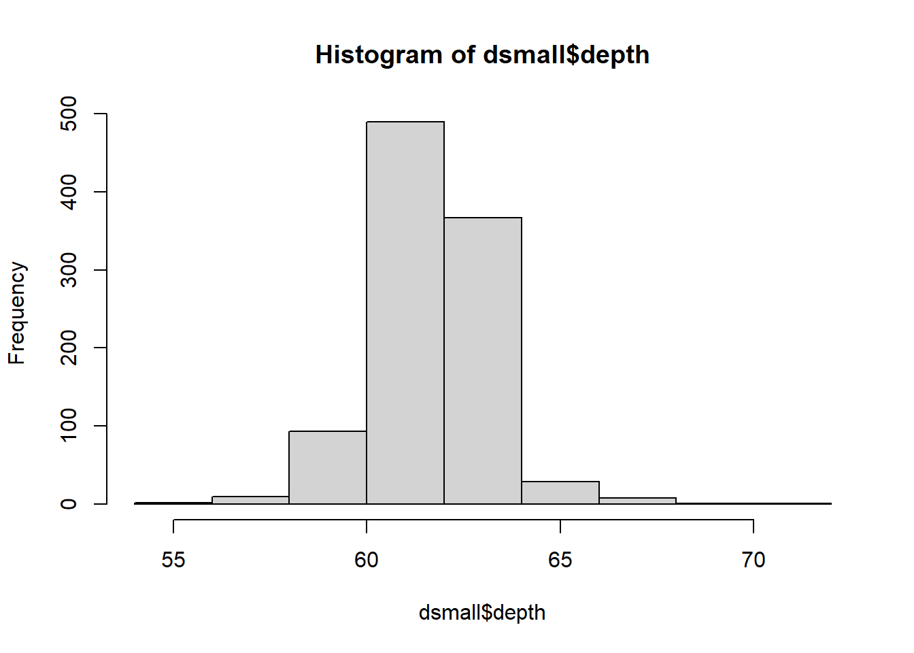
And it doesn’t take too much to clean it up. Here you can specify the number of bins by specifying how many breaks should be made in the data (the number of breaks controls the number of bins, and bin width) and use col for the fill color.
hist(dsmall$depth, xlab="depth", main="Histogram of diamond depth", col="cyan", breaks=20)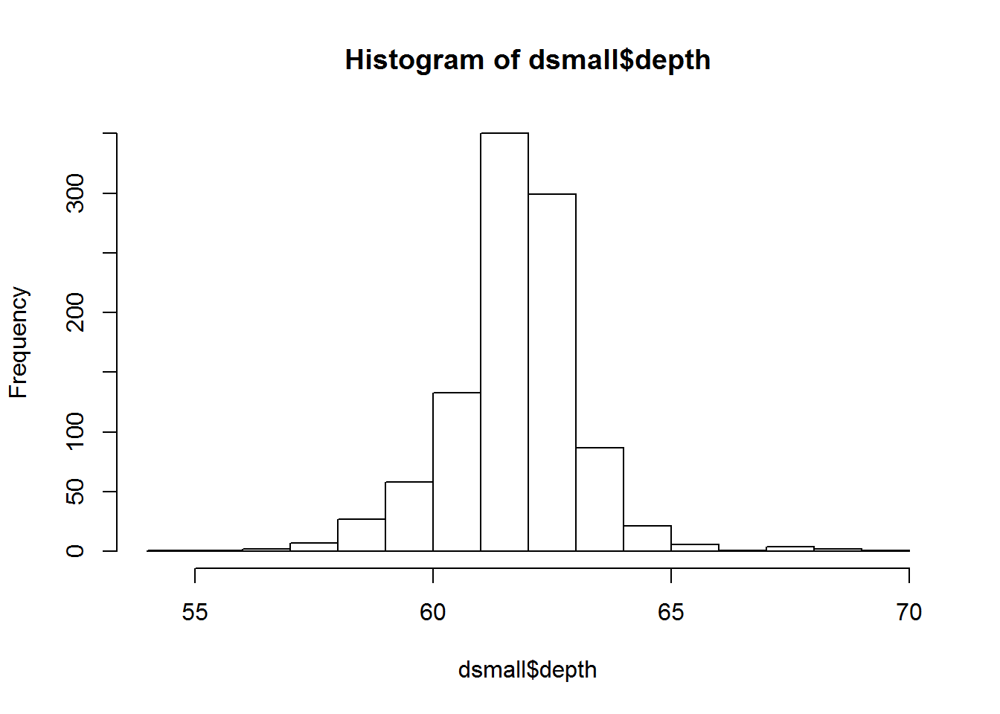
ggplot
ggplot(dsmall, aes(x=depth)) + geom_histogram(binwidth = 2.2)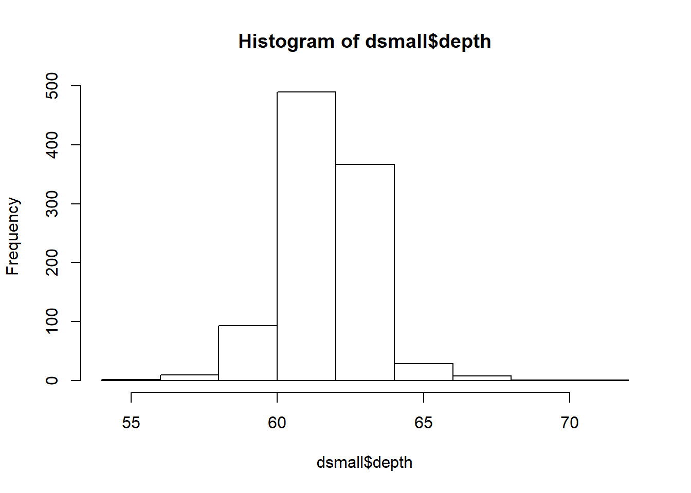
The binwidth here is set by looking at the cut points above that were used to create 7 bins. Notice that darkgrey is the default fill color, but makes it hard to differentiate between the bars. So we’ll make the outline black using colour, and fill the bars with white.
ggplot(dsmall, aes(x=depth)) + geom_histogram(colour="black", fill="white") +
ggtitle("Distribution of diamond depth")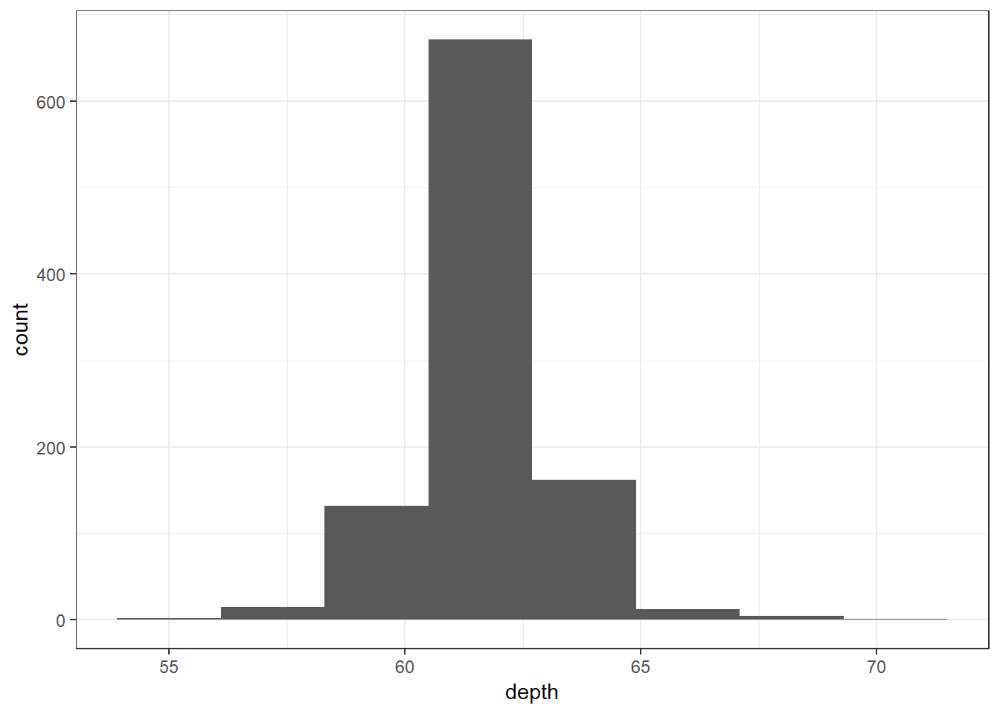
Note I did not specify the binwidth argument here. The size of the bins can hide features from your graph, the default value for ggplot2 is range/30 and usually is a good choice.
2.3.2.3 Density plots
To get a better idea of the true shape of the distribution we can “smooth” out the bins and create what’s called a density plot or curve. Notice that the shape of this distribution curve is much more… “wigglier” than the histogram may have implied.
base
plot(density(dsmall$depth))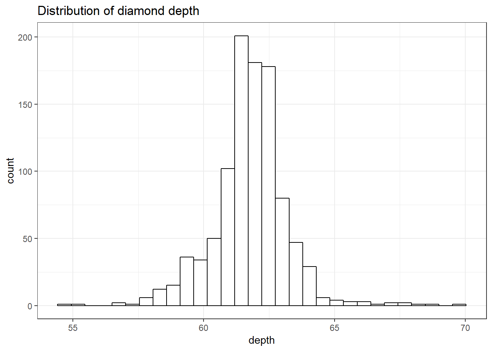
Awesome title huh? (NOT)
ggplot2
ggplot(dsmall, aes(x=depth)) + geom_density()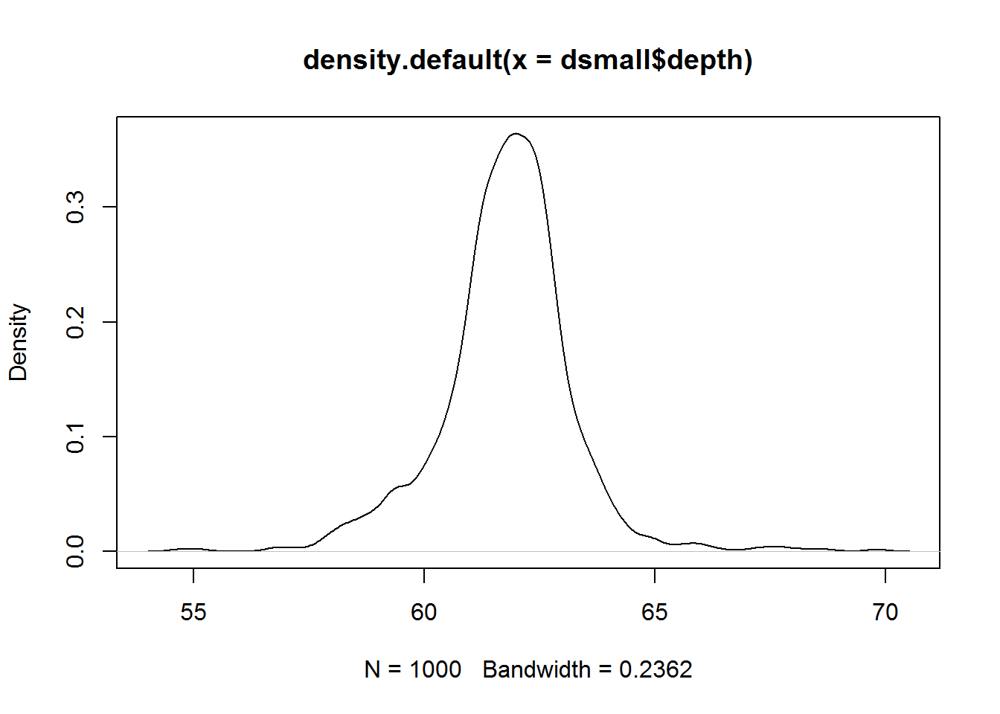
2.3.2.4 Histograms + density
Often is is more helpful to have the density (or kernel density) plot on top of a histogram plot.
Base
Since the height of the bars in a histogram default to showing the frequency of records in the data set within that bin, we need to 1) scale the height so that it’s a relative frequency, and then use the lines() function to add a density() line on top.
hist(dsmall$depth, prob=TRUE)
lines(density(dsmall$depth), col="blue")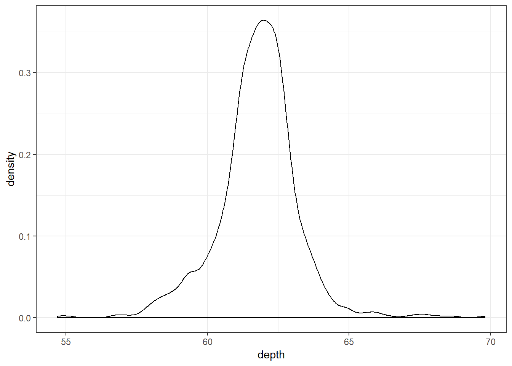
ggplot
The syntax starts the same, we’ll add a new geom, geom_density and color the line blue. Then we add the histogram geom using geom_histogram but must specify that the y axis should be on the density, not frequency, scale. Note that this has to go inside the aesthetic statement aes(). I’m also going to get rid of the fill by using NA so it doesn’t plot over the density line.
ggplot(dsmall, aes(x=depth)) + geom_density(col="blue") +
geom_histogram(aes(y=..density..), colour="black", fill=NA)
2.3.2.5 Boxplots
Another very common way to visualize the distribution of a continuous variable is using a boxplot. Boxplots are useful for quickly identifying where the bulk of your data lie. R specifically draws a “modified” boxplot where values that are considered outliers are plotted as dots.
base
boxplot(dsmall$depth)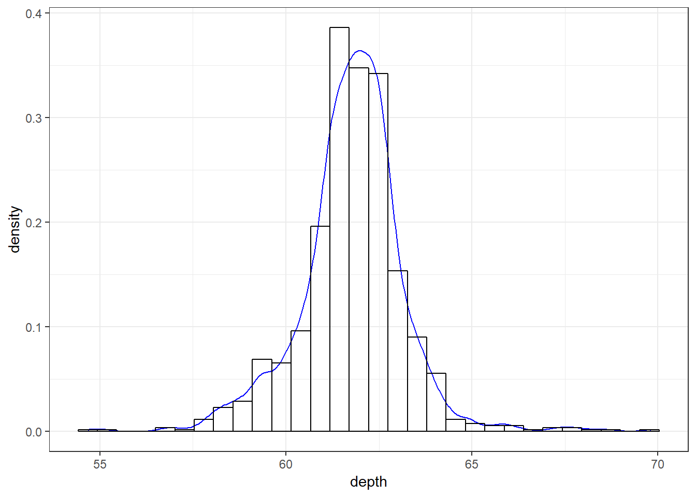
Notice that the only axis labeled is the y=axis. Like a dotplot the x axis, or “width”, of the boxplot is meaningless here. We can make the axis more readable by flipping the plot on it’s side.
boxplot(dsmall$depth, horizontal = TRUE, main="Distribution of diamond prices", xlab="Dollars")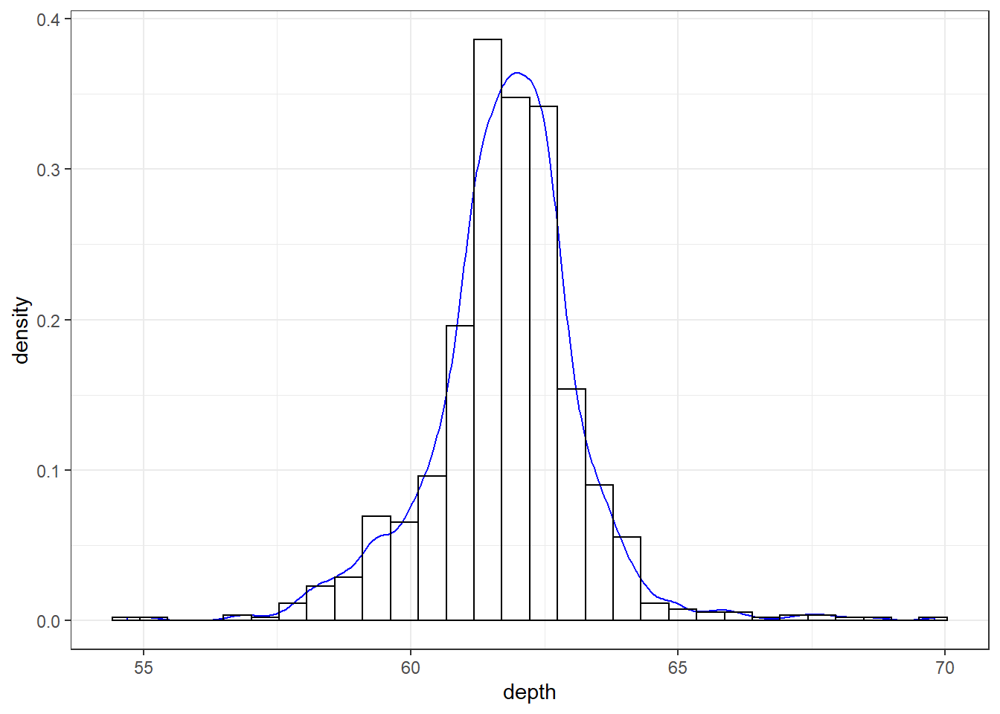
Horizontal is a bit easier to read in my opinion.
ggplot What about ggplot? ggplot doesn’t really like to do univariate boxplots. We can get around that by specifying that we want the box placed at a specific x value.
ggplot(dsmall, aes(x=1, y=depth)) + geom_boxplot()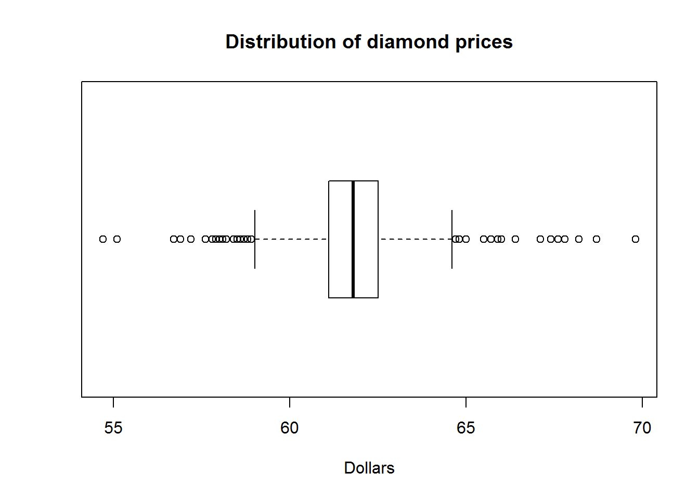
To flip it horizontal you may think to simply swap x and y? Good thinking. Of course it wouldn’t be that easy. So let’s just flip the whole darned plot on it’s coordinate axis.
ggplot(dsmall, aes(x=1, y=depth)) + geom_boxplot() + coord_flip()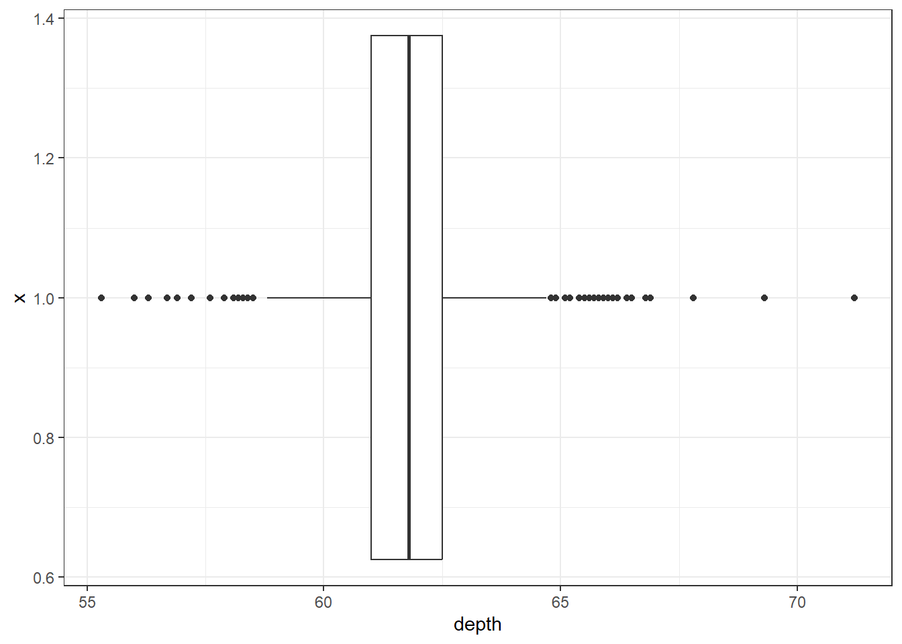
2.3.2.7 Boxplot + Violin plots
Overlaying a boxplot and a violin plot serves a similar purpose to Histograms + Density plots.
ggplot(dsmall, aes(x=1, y=depth)) + geom_violin() + geom_boxplot()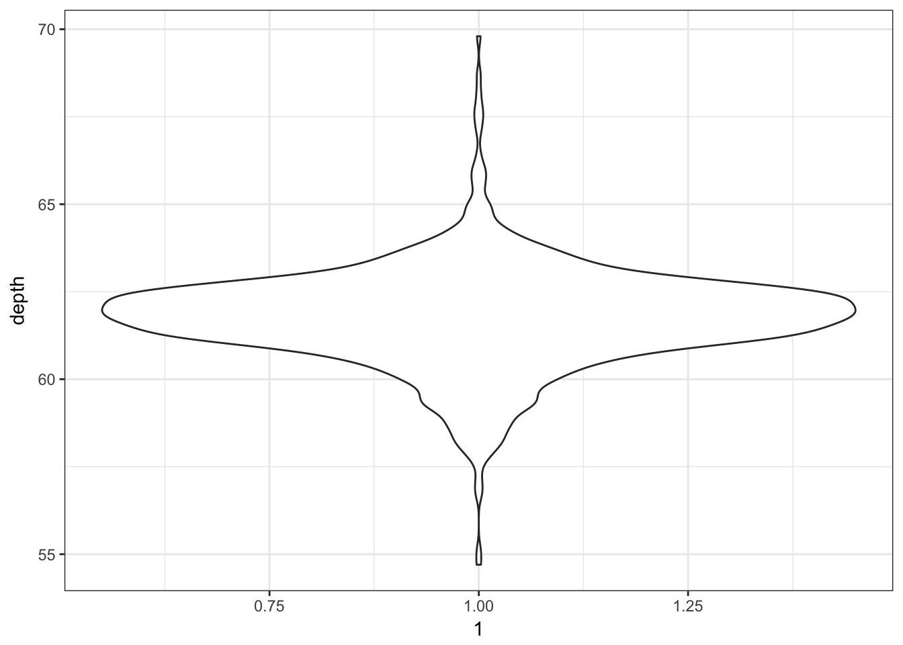
Better appearance - different levels of transparency of the box and violin.
ggplot(dsmall, aes(x=1, y=depth)) + xlab("") + theme_bw() +
geom_violin(fill="blue", alpha=.1) +
geom_boxplot(fill="blue", alpha=.5, width=.2) +
theme(axis.title.x=element_blank(),
axis.text.x=element_blank(),
axis.ticks.x=element_blank())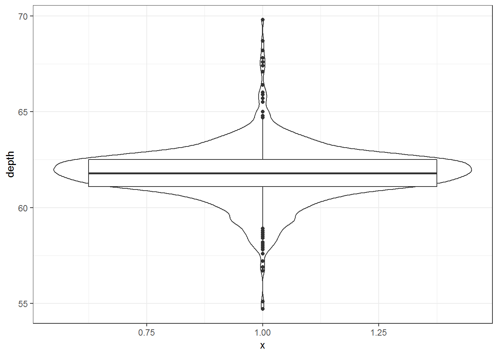
2.3.2.8 Normal QQ plots
The last useful plot that we will do on a single continuous variable is to assess the normality of the distribution. Basically how close the data follows a normal distribution.
base
qqnorm(dsmall$price)
qqline(dsmall$price, col="red")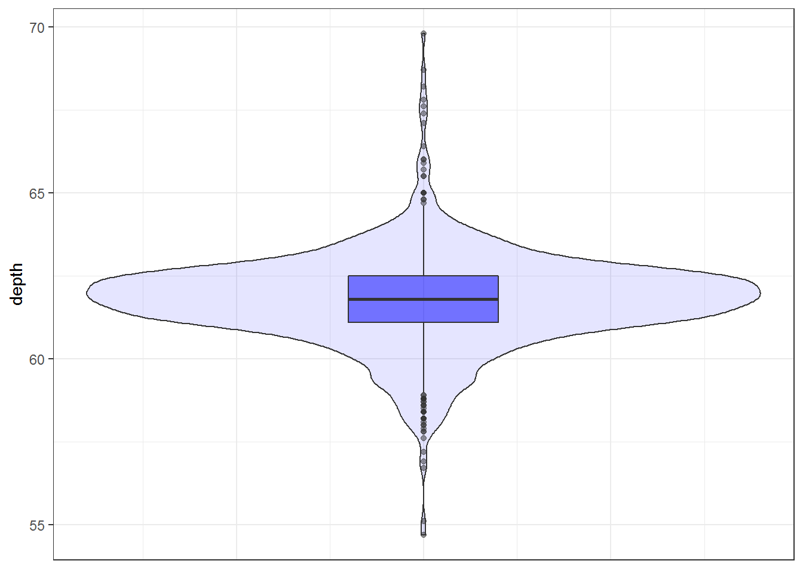
The line I make red because it is a reference line. The closer the points are to following this line, the more “normal” the shape of the distribution is. Price has some pretty strong deviation away from that line. Below I have plotted what a normal distribution looks like as an example of a “perfect” fit.
z <- rnorm(1000)
qqnorm(z)
qqline(z, col="blue")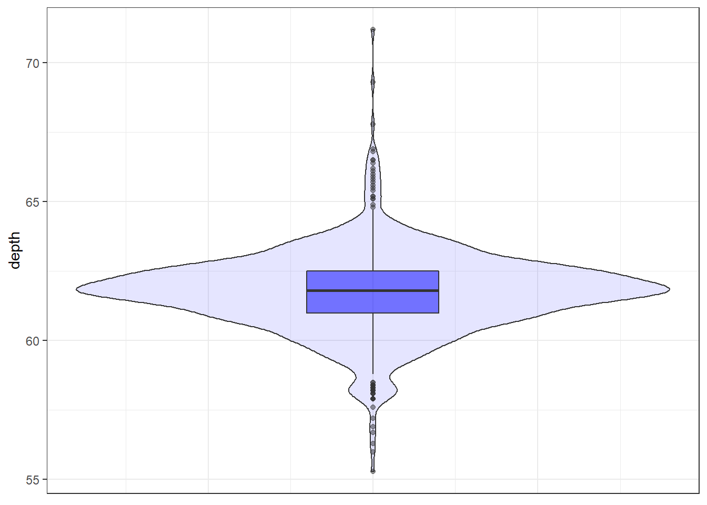
ggplot
qq (or qnorm) plots specifically plot the data against a theoretical distribution. That means in the aes() aesthetic argument we don’t specify either x or y, but instead the sample= is the variable we want to plot.
ggplot(dsmall, aes(sample=price)) + stat_qq()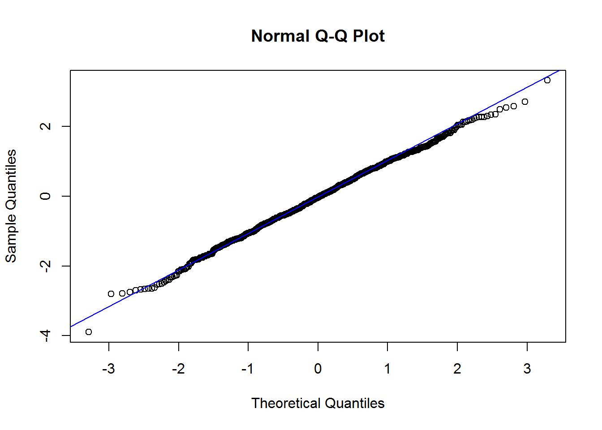
Additional references on making qqplots in ggplot: http://www.sthda.com/english/wiki/ggplot2-qq-plot-quantile-quantile-graph-quick-start-guide-r-software-and-data-visualization